There are many ways Americans celebrated the nation’s 250th birthday: a crowd on the national mall, foggy fireworks at the Chicago lakefront, avoiding the crowds and staying cool at home in the AC. Or one might have joined a gathering on a small island in the Puget Sound. We’re back on Blakely Island and experienced what was perhaps the perfect celebration of our nation’s 250th birthday party. A gathering of adventurous people enjoying a form of democracy recognizable by our founding fathers, including governance by vote, a celebratory parade, good food, and fireworks, albeit on a mini scale!
The Blakely Island homeowners annual meeting conveniently coincided with July 4th this year, so the festivities were particularly well attended, and one couldn’t help but notice the parallels…and contrasts…to 1776. The 100 or so lot owners each have one vote per lot (not exactly one person one vote or white men only but only property owners as favored by 18th century custom). We arrived bright and early the morning of July 4 by 9:00 am to assert our democratic rights at the meeting. A welcome gift of coffee and 140 freshly made donuts from the Blakely Island General Store (the marina) helped insure good attendance. We’re not sure what the writers of the Declaration of Independence munched on as they wrote, possibly ginger cakes and hard cider (according to ChatGPT).

The homeowner’s association, or Blakely Island Maintenance Commission, is the governing body of the island, functioning within the Home Owners Association regulations of the state of Washington. We all have a vote locally on issues related to our water, roads, and the runway. Historically, however, we never sought control of taxes on tea or stamps, so these issues were not shared with our 1776 ancestors. We are supposed to, and without revolt, do follow the laws on many island-related issues like regulated construction within 200 feet of the shoreline.
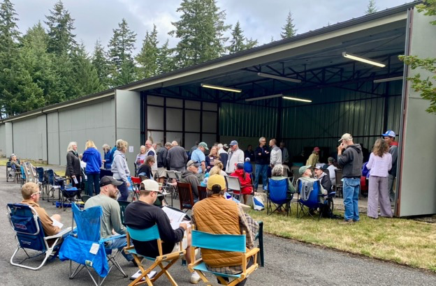
We’re blessed with meeting space thanks to use of an airplane hangar, a space unknown to our ancestors. The island was originally developed with a runway for owners of small planes, a popular way of traversing the many islands in the Puget Sound. It’s a very do-it-yourself operation as we all bring our own chairs!
Some years, there have been heated debates on issues like building tennis courts or a recycling center, but happily this year, the meeting went smoothly thanks to Board Chair Chris Dole’s firm hand and a local Judge who served as parliamentarian. We did not have to worry about an oppressive overseer thousands of miles away.
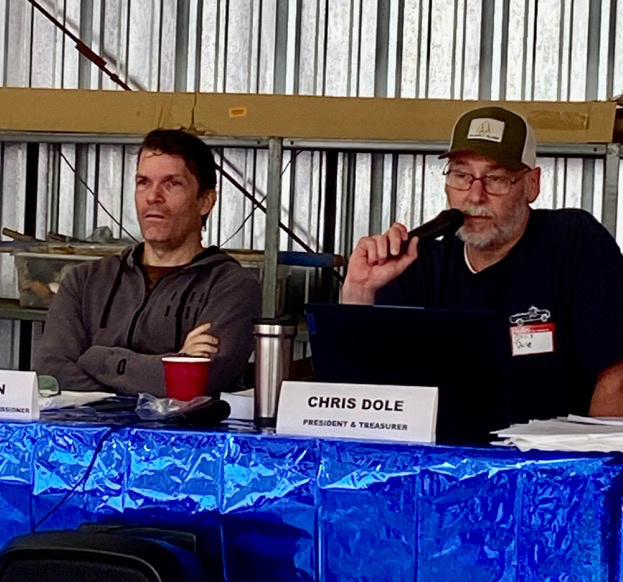
The key issue for debate this year was the ongoing discussion of the water treatment plant, estimated to have about five years left before a replacement would be needed. This had been on the agenda in the past when an option to consider wells as a replacement stirred controversy, not over taxes but over the procedure to authorize test wells. The well option was off the agenda this year. The issue was in fact a tax-like debate: how to pay for an estimated four million dollar new water plant in the future. A welcome civilized discussion ensued. Adding to the existing reserve fund with an increased assessment of lot owners was approved, enough to at least slightly mitigate the future hit.
Various grant and donation opportunities will also be explored. No muskets were dusted off!
With the new board members duly elected and the higher assessment approved by popular vote, it was on to the celebration.
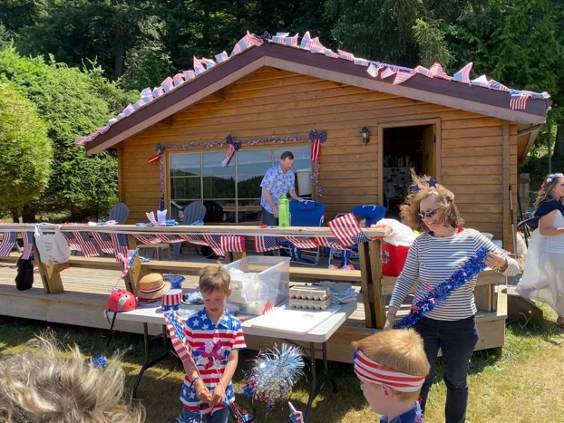
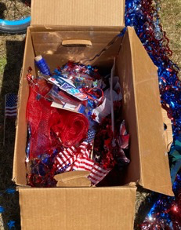
For over 50 years Blakely has celebrated the Fourth of July with a parade. Everyone is encouraged to decorate cars, trucks, bicycles, off-road vehicles, golf carts, and anything that moves. The island fire truck always leads the parade.
The Burkhart family has for three generations provided ample decorations for anyone in need of red, white, and blue, and the parade leads off from their cabin on the south end of the runway. In 1776, parades would have focused on military units, soldiers with bayonets and muskets, horses, and the firing of cannon. About all we have in common are flags and banners!
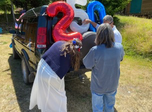
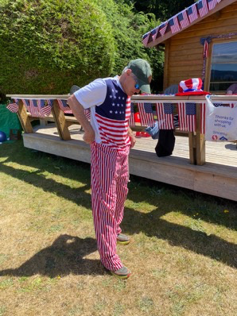
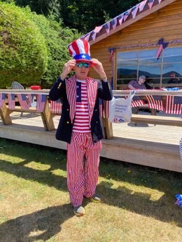
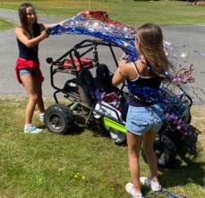
Uncle Sam would not have appeared in that first parade. He didn’t originate until the War of 1812, 36 years later. On Blakely, we also chose not to burn portraits of King George III or melt down his statues for ammunition. This year may have been the island’s longest parade, formed with more motorized vehicles and fewer bicycles than previous years.
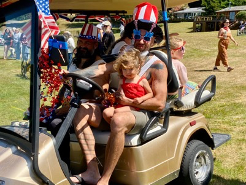
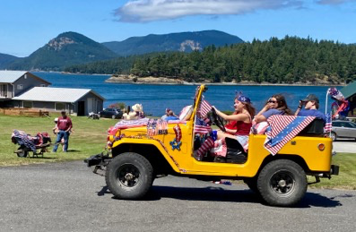
The parade traditionally follows the taxiway around the runway (another surprise for the colonists) a half mile in each direction. Families that don’t march sit in front of their houses and hangars (serious pilots live along the runway) and cheer on the parade. But it takes more than an ailing ankle to keep one from participating!
The parade curves around the runway and returns to its starting point. Accompanied by the occasional greeting of the firetruck’s siren (rather than musket fire), Blakely’s parade beautifully demonstrates our patriotic spirit!
But like the colonists of 1776, the festivities were not over! A community dinner drew everyone together at the cabana by the marina. Three grills kept a steady supply of hamburgers and cheeseburgers flowing next to tables with all the trimmings. Kegs of beer and boxes of wine slaked thirst. A table laden with islanders’ favorites featured side dishes like Mac & Cheese and nacho chips. The colonists would have happily recognized the beer and not so much the wine which was not claret in bottles but chardonnay in boxes, and they would have missed the hickory nuts and goose, common on their celebratory tables.
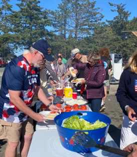
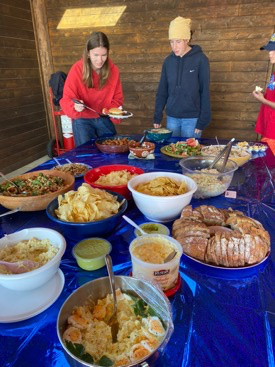
And then there were the desserts. Our founding fathers would have recognized custard and apple tarts, but where were the plum cakes? And what were the mysterious brown squares? Brownies were reportedly not invented until Bertha Palmer asked the Palmer House to invent a sweet to be carried at the 1893 Columbian Exposition. Totally puzzling would also be the Rice Krispie treats, not introduced by Kellogg until 1928. Ice cream, available in the marina, would have been familiar to some colonists, but only the elite. Ice cream was a very special treat, just for the rich. Winter ice was cut from lakes, stored in sawdust, and packed with salt to freeze the ice cream mixture.
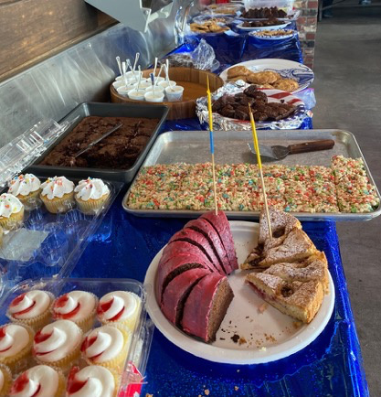
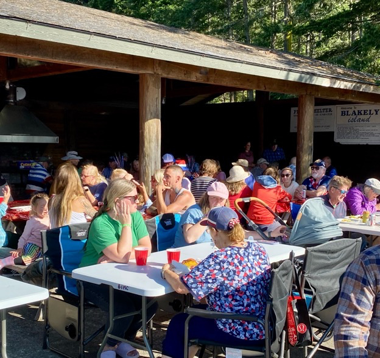
Well-fed islanders had a few hours to recover before the fireworks, heard and seen throughout the islands. Colonists would be amazed by today’s high flying, colorful and lengthy displays. In 1776, colors were white, gold and sometime orange. Shows were short and low – primarily sparks, firecrackers, and fountains. Noise of course accompanied both!
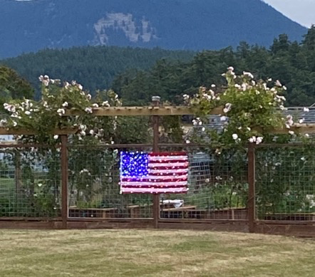
So ended another Fourth of July on Blakely Island. Celebrating in many ways like our ancestors did in 1776, we enjoy the freedoms won for us 250 years ago. We hope that we are wise enough to maintain them.